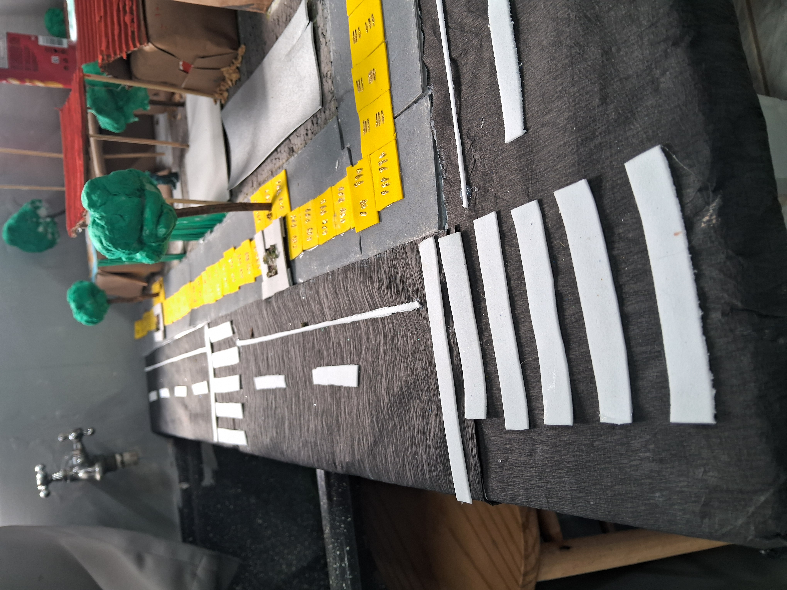

Acessibilidade Arquitetônica
Eliminação de barreiras em edifícios, como a instalação de rampas de acesso, elevadores adaptados, pisos táteis e portas amplas para cadeirantes.
Transformando espaços escolares e digitais em ambientes livres de barreiras para todas as pessoas.
A acessibilidade é o direito de pessoas com deficiência ou mobilidade reduzida de viverem de forma independente e participarem plenamente de todos os aspectos da vida. Na educação, isso significa garantir que infraestruturas físicas, tecnologias e metodologias de ensino atendam a todos de forma igualitária.
Eliminação de barreiras em edifícios, como a instalação de rampas de acesso, elevadores adaptados, pisos táteis e portas amplas para cadeirantes.
Garantia de que sites e softwares sejam navegáveis por leitores de tela, ofereçam bom contraste visual e suporte para comandos por teclado.
Superação de preconceitos, estigmas e barreiras comportamentais na sociedade, promovendo a empatia e o respeito às diferenças.
Existem dois tipos principais de piso tátil: o direcional (com linhas retas, que guia o caminho) e o alerta (com bolinhas, que indica perigo ou mudança de direção).
Stephen Hawking foi uma das figuras mais célebres a utilizar um sintetizador de voz para se comunicar, popularizando a tecnologia assistiva no meio científico mundial.
Existe uma diretriz internacional chamada WCAG (Web Content Accessibility Guidelines) que estabelece regras globais para tornar a web acessível para pessoas cegas, surdas e neurodivergentes.
Abaixo estão duas representações conceituais de um projeto arquitetônico para uma escola 100% inclusiva, geradas com o auxílio de Inteligência Artificial:

Conceito 3D mostrando uma entrada sem degraus, com rampas de inclinação suave, sinalização tátil integrada ao pavimento e guichês em dupla altura.

Projeto de espaço interno com mobiliário regulável para cadeirantes, iluminação regulável para pessoas no espectro autista e recursos táteis nas paredes.
Assista ao vídeo abaixo para entender na prática a importância do design universal nas escolas e ambientes urbanos: